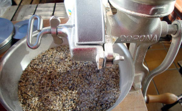
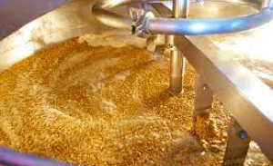
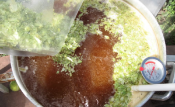
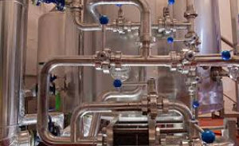
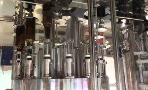

La historia de Cerveza-Proyect habla de la intensa búsqueda, la pasión y la quimica de la amistad para llegar a un destino que siempre estuvo impreso en los corazones de quienes hacemos esta noble bebida, que es estar con todos ustedes en cualquier momento de su tiempo libre.

Molienda de grano
La molienda consiste en romper el grano, respetando la cáscara o envoltura y provocando la pulverización de la harina, la malta es comprimida entre dos cilindros pero evitando destruir la cáscara lo menos posible pues ésta servirá de lecho filtrante en la operación de filtración del mosto.

Maceracion
El macerado, es la parte del proceso de elaboración de cerveza donde cada maestro cervecero, le da a su receta un toque especial. ... Lo que hacemos en el macerado es mezclar el grano con agua caliente de modo que las enzimas de la malta hagan su trabajo y generen un mosto dulce y fermentable.

Coccion del mosto
La cocción del mosto es el proceso de la elaboración de la cerveza que consume la mayor cantidad de energía. Esta es la razón por la cual mediante un sistema armonizado óptimamente se pueden reducir los costes y simultáneamente garantizar la máxima calidad de mosto.

Enfriado del mosto
El enfriamiento del mosto es un proceso tan importante como los demás. Consiste en hacer un enfriamiento rápido y radical del mosto justo después del hervor. El mosto debe pasar lo más rápido posible de la alta temperatura del hervor a una temperatura ambiente.

Fermentado y maduracion
Resultado de imagen para fermentacion y maduracion Se define como el proceso donde la levadura transforma los azúcares procedentes del mosto de cebada en etanol y dióxido de carbono.

Embotellado
Pasa la cerveza del fermentador a una cubeta temporal a través de un sifón. No lo hagas bruscamente, pues el aire puede oxidar fácilmente tu cerveza. En este recipiente puedes añadir el azúcar para la carbonatación, así reducirás la cantidad de sedimento en las botellas